port
About
- I build and contribute to developer tools. I care about good documentation, open source software, and experimentation. I automate the stuff that makes sense automating.
- Developer Relations Engineer at Monad, helping grow the developer community, maintaining the docs, and building cool stuff on Monad.
- Built blitz.devnads.com, the platform Monad Blitz hackathons run on, and organize Blitz events across Turkey.
- Merc at BuidlGuidl, helping make abi.ninja and Scaffold-ETH better, building public goods, and doing media work.
- GitHub · Twitter · Telegram
Projects
- blitz.devnads.com - Monad-native hackathon platform
- MOST - the Monad Open Source Track, which gives devs who keep shipping open source on Monad AI credits that grow the longer they keep it up (I maintain it)
- devnads.com - home for Monad community tools: events, skills, and more
- x402beat - dashboard of x402 settlement activity measured on-chain across 10 EVM chains
- mera.devnads.com - live passkey-account demos on Monad testnet: a faucet, an on-chain mint, a shared pixel canvas, and claim links that put MON in a URL
- docusaurus-plugin-copy-page-button - a copy-page button for Docusaurus, now on 28 docs sites (Puppeteer, Sui, Arbitrum, Ethereum execution-apis, Cardano…). Story: How to find ideas worth building
- abi.ninja - interact with any contract on any chain (maintainer, not owner)
- mipland.com - learn about Monad Improvement Proposals visually
- mip8-profiler - see how much cheaper your contract's storage reads get under MIP-8, from a real Foundry test, without touching the Solidity (examples)
- clear-signing-helper - go from a deployed contract to an ERC-7730 clear-signing registry submission that passes the registry's own checks (Claude Code skill)
- llms-txt-check - validates a site's llms.txt against what the site actually serves. Found 71 dead links in Drizzle's docs on day one. Also runs a weekly scoreboard of major docs sites
- gulltoppr - lets AI agents read, simulate, and prepare txs for any contract on any EVM chain, even unverified ones (decompiles via heimdall-rs). REST, MCP, SDK, and a skill
- evm-abi-commons - provably-correct EVM selector to signature dataset (CC0), like 4byte but every entry carries a proof
- puddleswap - testnet swap on Monad testnet
- monad is different - interactive explainer for why Monad keeps the full stack at scale
- blockchains-visualized - teaches how blockchains work by running a toy one in your browser
- nad-agent - 100% local AI agent with a gasless, self-custodial wallet on Monad (QVAC + WDK)
- should i run this - calculator for whether a local AI rig beats subscriptions and APIs
- perbrowser - one VPN per browser on macOS, each with its own WireGuard exit. Story: one VPN per browser
- cloudflare-crawl - Claude Code skill for using Cloudflare's /crawl API
- monad-monitor - lightweight TUI for real-time monitoring of Monad nodes
- address.vision - peek into any eth address
- storagoor - peek into evm storage slots (beta)
- oracle-dashboard - oracle price feed dashboard for monad mainnet
- nft-snapshot - capture ownership snapshots for ERC-721, ERC-1155, and ERC-20 tokens on Monad
- monad-sync-demo - demo for Monad's eth_sendRawTransactionSync RPC method
- claude-historian - interactive CLI browser for Claude Code sessions
- scaffold-pwa - Scaffold-ETH, but pwa, using serwist
- monadclip - old school flash game website for Monad-based games
- splait - Scaffold-ETH 2 fork for splitting ETH using words, instead of clicks, powered by gpt
- Also check out my GitHub for smaller stuff.
Writing
- What makes Monad different September 21, 2026
- Why Monad is the best chain for your first dapp September 14, 2026
- one VPN per browser August 9, 2026
- the best local model to run on your laptop for $0 August 2, 2026
- rent geniuses, own workhorses June 25, 2026
- I asked Fable 5 to build a dex. Here's how it went. June 11, 2026
- I asked Gemma 4 12B to create a dapp. Make no mistakes. June 5, 2026
- How to find ideas worth building May 22, 2026
- Simple just works: how i built puddleswap May 17, 2026
- You are prompting GPT 5.5 wrong. Apr 30, 2026
- so... how to create a skill that works? Feb 23, 2026
- Skills don't work the way we think they do Feb 20, 2026
- You don't know how to vibe-code Jan 16, 2026
- More articles on X
Events and talks
I organize the Monad Blitz hackathon series and speak at developer and AI events.
-
Monad Blitz Ankara v4
Oct 24, 2026A one-day hackathon at THK & Orion Tekmer. We did workshops in the morning, then teams built on Monad until the evening demos, and the audience voted on the winners. (Luma, projects)
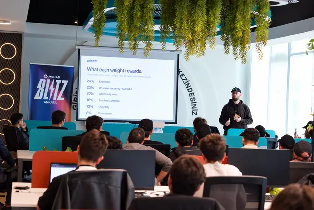
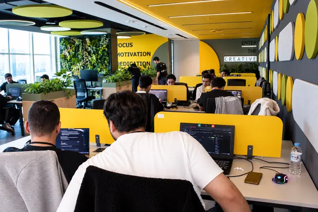
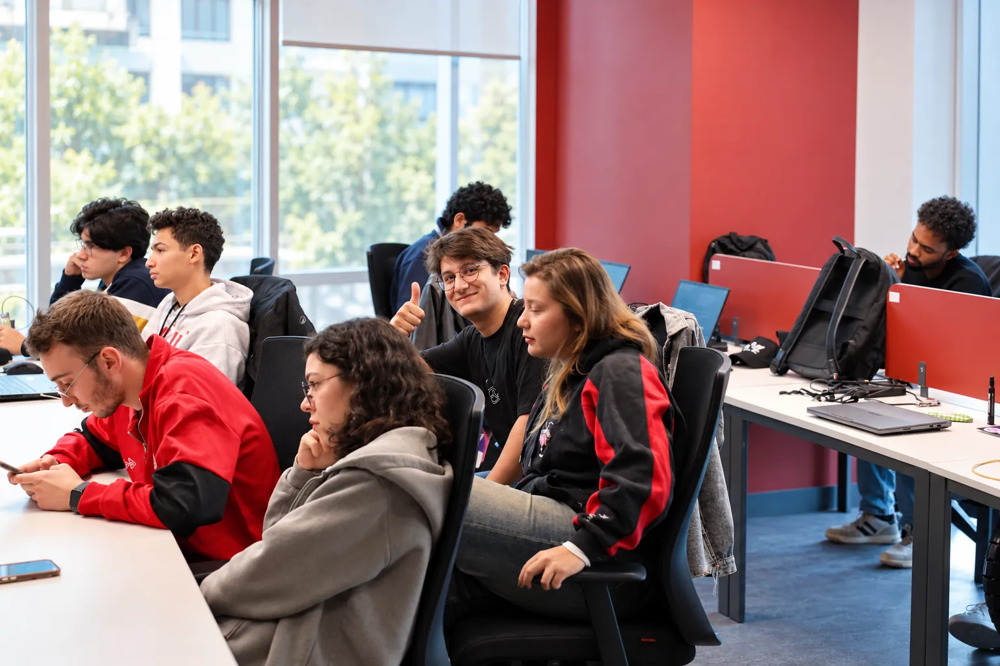
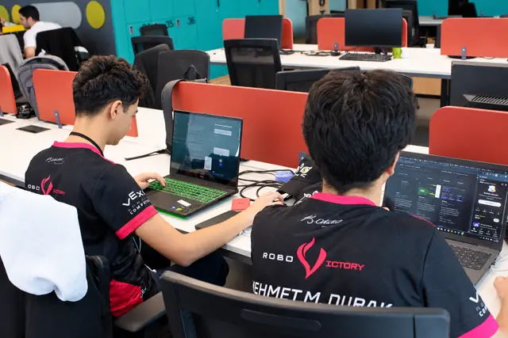
-
Monad Blitz İstanbul v2
Sep 26, 2026A one-day hackathon at 42 İstanbul. Teams shipped 38 projects by the evening demos, and the audience voted on the winners. (Luma, projects)
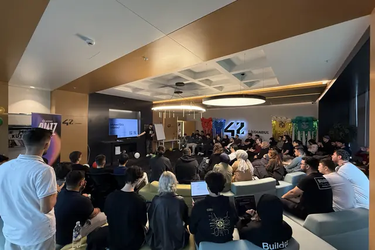
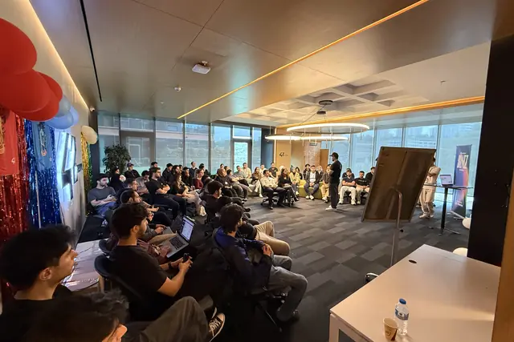
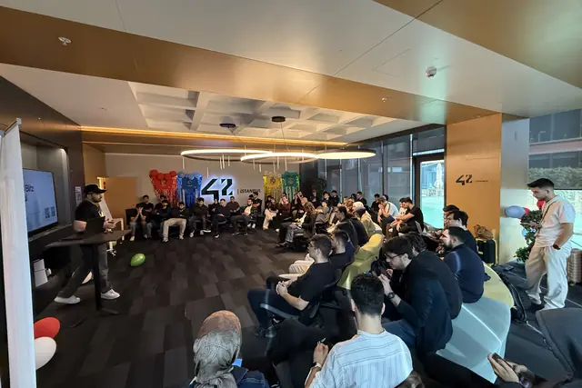
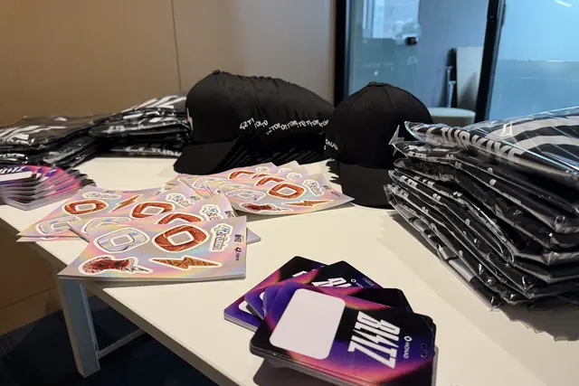
-
Monad Blitz Belgrade
Aug 22, 2026A one-day hackathon hosted at Tenderly's office in Belgrade. 16 projects made it to the evening demos, and the winner took home $1,000. (Luma, projects)
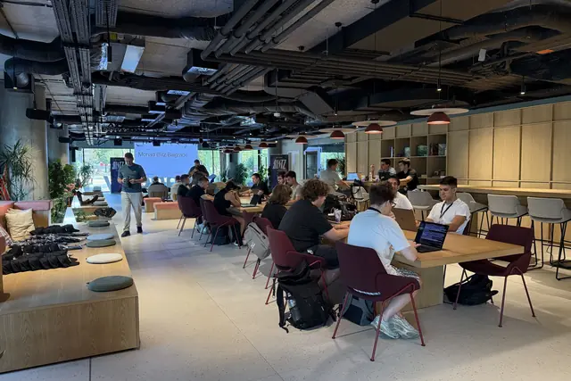
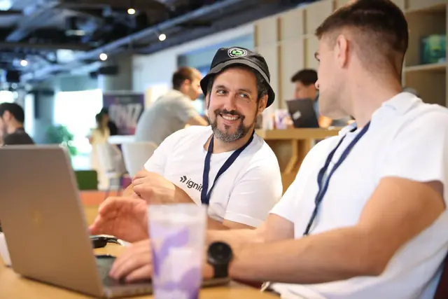
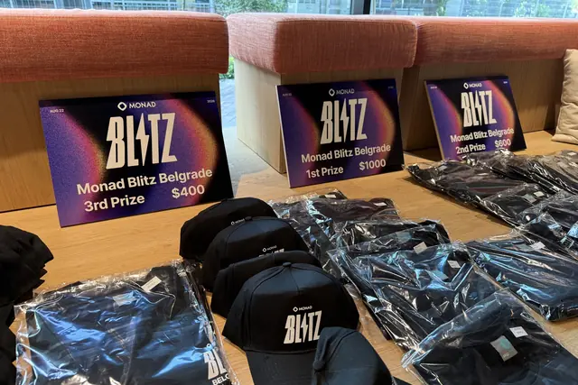
-
ClawCon Ankara 2
Jun 28, 2026A talk on when running AI locally is actually worth it. (write-up)
-
Monad Blitz Ankara v3
Jun 27, 2026 -
Monad Blitz Çanakkale
May 16, 2026 -
Monad Blitz Kayseri
Apr 23, 2026 -
Monad Blitz İzmir
Mar 28, 2026 -
Monad Blitz İstanbul
Feb 28, 2026 -
Monad Blitz Ankara
Jan 31, 2026 -
Monad Blitz Ankara
Oct 4, 2025